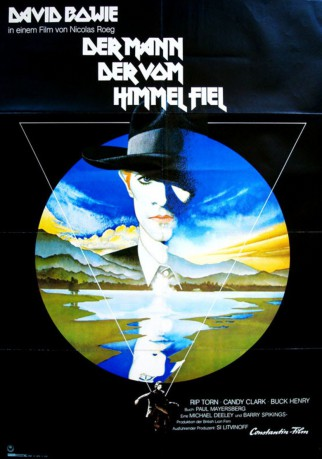
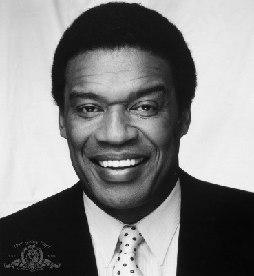

#4791 Der Mann, der vom Himmel fiel
Alternativ: The Man Who Fell to Earth
 
 IMDB-Wertung: 6.7 / 10
IMDB-Wertung: 6.7 / 10  Metascore: 0
Metascore: 0 
Um dem Wassermangel auf seinem Planeten entgegen zu wirken, landet Thomas Jerome Newton auf der Erde. Mit Hilfe bahnbrechender Patente baut er ein Wirtschaftsimperium auf, mit dessen Finanzkraft er das Wasser zu seinem Planeten transportieren will. Doch sein Erfolg wird vom Neid der Konkurrenz begleitet, wodurch der außerirdische Bewohner zunehmend Probleme bekommt. Zu diesem Film ist momentan ein Remake in Arbeit.
Jahr: 1976
Dauer: 139 Minuten
FSK: 16
Land: England Studio: MCP Sound & Media AGTonspuren:
Untertitel: Deutsch,
Auflösung: 1080p (1920x824) Größe: 10854 MB
Genre: Sci-Fi, Drama
Regisseur: Nicolas Roeg
Drehbuch: Marcel Prêtre
Soundtrack:
Darsteller:
 David Bowie als Thomas Jerome Newton
David Bowie als Thomas Jerome Newton Rip Torn als Nathan Bryce
Rip Torn als Nathan Bryce- Candy Clark als Mary-Lou
- Buck Henry als Oliver Farnsworth
-  Bernie Casey als Peters
- Tony Mascia als Arthur
- Jim Lovell als Himself, Commander of Apollo 13
- Dort Clark als Waiter , uncredited
- Claudia Jennings als Peters' Wife , uncredited
- Debbie Letteau als Professor's, Nathan Bryce's Daughter , uncredited
- Jackson D. Kane als Professor Canutti
- Rick Riccardo als Trevor
- Linda Hutton als Elaine
- Hilary Holland als Jill
- Adrienne Larussa als Helen
- Lilybelle Crawford als Jewelery Store Owner
- Richard Breeding als Receptionist
- Albert Nelson als Waiter
- Peter Prouse als Peters' Associate
- Charles Noel als Doctor , uncredited
Datei: X:\1976\Mann, der vom Himmel fiel, Der (1976, FSK16, 1920x824).mkv seit 18.11.2016
Festplatte: HD 1971-1979
 Es gibt insgesamt 31 Filme in der Gruppe '1976'
Es gibt insgesamt 31 Filme in der Gruppe '1976'